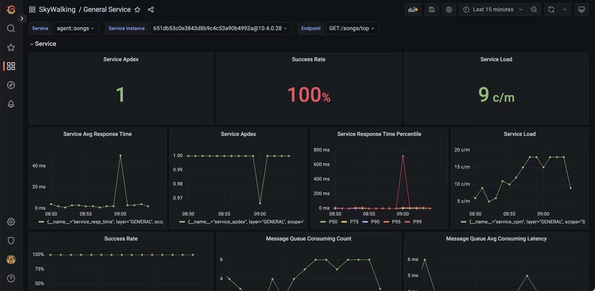
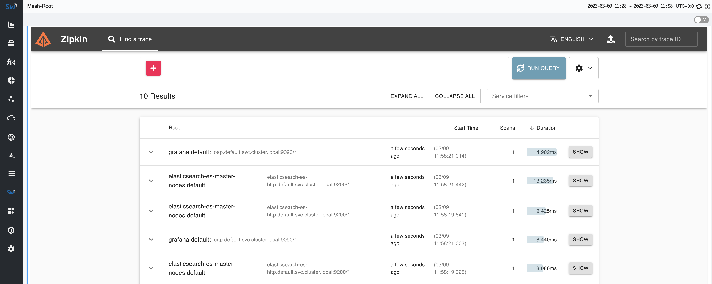

Release Apache SkyWalking APM 9.4.0
Release Apache SkyWalking 9.4.0
SkyWalking 9.4.0 is released. Go to downloads page to find release tars.
PromQL and Grafana Support
Zipkin Lens UI Bundled
AWS S3 and DynamoDB monitoring

Project
- Bump up Zipkin and Zipkin lens UI dependency to 2.24.0.
- Bump up Apache parent pom version to 29.
- Bump up Armeria version to 1.21.0.
- Clean up maven
pom.xmls. - Bump up Java version to 11.
- Bump up snakeyaml to 2.0.
OAP Server
- Add
ServerStatusServicein the core module to provide a new way to expose booting status to other modules. - Adds Micrometer as a new component.(ID=141)
- Refactor session cache in MetricsPersistentWorker.
- Cache enhancement - don’t read new metrics from database in minute dimensionality.
// When
// (1) the time bucket of the server's latest stability status is provided
// 1.1 the OAP has booted successfully
// 1.2 the current dimensionality is in minute.
// 1.3 the OAP cluster is rebalanced due to scaling
// (2) the metrics are from the time after the timeOfLatestStabilitySts
// (3) the metrics don't exist in the cache
// the kernel should NOT try to load it from the database.
//
// Notice, about condition (2),
// for the specific minute of booted successfully, the metrics are expected to load from database when
// it doesn't exist in the cache.
- Remove the offset of metric session timeout according to worker creation sequence.
- Correct
MetricsExtensionannotations declarations in manual entities. - Support component IDs' priority in process relation metrics.
- Remove abandon logic in MergableBufferedData, which caused unexpected no-update.
- Fix miss set
LastUpdateTimestampthat caused the metrics session to expire. - Rename MAL rule
spring-sleuth.yamltospring-micrometer.yaml. - Fix memory leak in Zipkin API.
- Remove the dependency of
refresh_intervalof ElasticSearch indices fromelasticsearch/flushIntervalconfig. Now, it usescore/persistentPeriod+ 5s asrefresh_intervalfor all indices instead. - Change
elasticsearch/flushIntervalto 5s(was 15s). - Optimize
flushIntervalof ElasticSearch BulkProcessor to avoid extra periodical flush in the continuous bulk streams. - An unexpected dot is added when exp is a pure metric name and expPrefix != null.
- Support monitoring MariaDB.
- Remove measure/stream specific interval settings in BanyanDB.
- Add global-specific settings used to override global configurations (e.g
segmentIntervalDays,blockIntervalHours) in BanyanDB. - Use TTL-driven interval settings for the
measure-defaultgroup in BanyanDB. - Fix wrong group of non time-relative metadata in BanyanDB.
- Refactor
StorageData#idto the new StorageID object from a String type. - Support multiple component IDs in the service topology level.
- Add
ElasticSearch.Keywordannotation to declare the target field type askeyword. - [Breaking Change] Column
component_idofservice_relation_client_sideandservice_relation_server_sidehave been replaced bycomponent_ids. - Support
prioritydefinition in thecomponent-libraries.yml. - Enhance service topology query. When there are multiple components detected from the server side, the component type of the node would be determined by the priority, which was random in the previous release.
- Remove
component_idfromservice_instance_relation_client_sideandservice_instance_relation_server_side. - Make the satellite E2E test more stable.
- Add Istio 1.16 to test matrix.
- Register ValueColumn as Tag for Record in BanyanDB storage plugin.
- Bump up Netty to 4.1.86.
- Remove unnecessary additional columns when storage is in logical sharding mode.
- The cluster coordinator support watch mechanism for notifying
RemoteClientManagerandServerStatusService. - Fix ServiceMeshServiceDispatcher overwrite ServiceDispatcher debug file when open SW_OAL_ENGINE_DEBUG.
- Use
groupByandinoperators to optimize topology query for BanyanDB storage plugin. - Support server status watcher for
MetricsPersistentWorkerto check the metrics whether required initialization. - Fix the meter value are not correct when using
sumPerMinLabeldorsumHistogramPercentileMAL function. - Fix cannot display attached events when using Zipkin Lens UI query traces.
- Remove
time_bucketfor both Stream and Measure kinds in BanyanDB plugin. - Merge
TIME_BUCKETofMetricsandRecordintoStorageData. - Support no
layerin thelistServicesquery. - Fix
time_bucketofServiceTrafficnot set correctly inslowSqlof MAL. - Correct the TopN record query DAO of BanyanDB.
- Tweak interval settings of BanyanDB.
- Support monitoring AWS Cloud EKS.
- Bump BanyanDB Java client to 0.3.0-rc1.
- Remove
idtag from measures. - Add
Banyandb.MeasureFieldto mark a column as a BanyanDB Measure field. - Add
BanyanDB.StoreIDTagto store a process’s id for searching. - [Breaking Change] The supported version of ShardingSphere-Proxy is upgraded from 5.1.2 to 5.3.1. Due to the changes of ShardingSphere’s API, versions before 5.3.1 are not compatible.
- Add the eBPF network profiling E2E Test in the per storage.
- Fix TCP service instances are lack of instance properties like
podandnamespace, which causes Pod log not to work for TCP workloads. - Add Python HBase happybase module component ID(94).
- Fix gRPC alarm cannot update settings from dynamic configuration source.
- Add
batchOfBytesconfiguration to limit the size of bulk flush. - Add Python Websocket module component ID(7018).
- [Optional] Optimize single trace query performance by customizing routing in ElasticSearch. SkyWalking trace segments and Zipkin spans are using trace ID for routing. This is OFF by default, controlled by
storage/elasticsearch/enableCustomRouting. - Enhance OAP HTTP server to support HTTPS
- Remove handler scan in otel receiver, manual initialization instead
- Add aws-firehose-receiver to support collecting AWS CloudWatch metric(OpenTelemetry format). Notice, no HTTPS/TLS setup
support. By following AWS Firehose request, it uses proxy request
(
https://...instead of/aws/firehose/metrics), there must be a proxy(Nginx, Envoy, etc.). - Avoid Antlr dependencies' versions might be different in compile time and runtime.
- Now
PrometheusMetricConverter#escapedNamealso support converting/to_. - Add missing TCP throughput metrics.
- Refactor
@Columnannotation, swapColumn#nameandElasticSearch.Column#columnAliasand renameElasticSearch.Column#columnAliastoElasticSearch.Column#legacyName. - Add Python HTTPX module component ID(7019).
- Migrate tests from junit 4 to junit 5.
- Refactor http-based alarm plugins and extract common logic to
HttpAlarmCallback. - Support Amazon Simple Storage Service (Amazon S3) metrics monitoring
- Support process Sum metrics with AGGREGATION_TEMPORALITY_DELTA case
- Support Amazon DynamoDB monitoring.
- Support prometheus HTTP API and promQL.
Scopein the Entity of Metrics query v1 protocol is not required and automatical correction. The scope is determined based on the metric itself.- Add explicit
ReadTimeoutfor ConsulConfigurationWatcher to avoidIllegalArgumentException: Cache watchInterval=10sec >= networkClientReadTimeout=10000ms. - Fix
DurationUtils.getDurationPointsexceed, whenstartTimeBucketequalsendTimeBucket. - Support process OpenTelemetry ExponentialHistogram metrics
- Add FreeRedis component ID(3018).
UI
- Add Zipkin Lens UI to webapp, and proxy it to context path
/zipkin. - Migrate the build tool from vue cli to Vite4.
- Fix Instance Relation and Endpoint Relation dashboards show up.
- Add Micrometer icon.
- Update MySQL UI to support MariaDB.
- Add AWS menu for supporting AWS monitoring.
- Add missing FastAPI logo.
- Update the log details page to support the formatted display of JSON content.
- Fix build config.
- Avoid being unable to drag process nodes for the first time.
- Add node folder into ignore list.
- Add ElPopconfirm to component types.
- Add an iframe widget for zipkin UI.
- Optimize graph tooltips to make them more friendly.
- Bump json5 from 1.0.1 to 1.0.2.
- Add websockets icon.
- Implement independent mode for widgets.
- Bump http-cache-semantics from 4.1.0 to 4.1.1.
- Update menus for OpenFunction.
- Add auto fresh to widgets independent mode.
- Fix: clear trace ID on the Log and Trace widgets after using association.
- Fix: reset duration for query conditions after time range changes.
- Add AWS S3 menu.
- Refactor: optimize side bar component to make it more friendly.
- Fix: remove duplicate popup message for query result.
- Add logo for HTTPX.
- Refactor: optimize the attached events visualization in the trace widget.
- Update BanyanDB client to 0.3.1.
- Add AWS DynamoDB menu.
- Fix: add auto period to the independent mode for widgets.
- Optimize menus and add Windows monitoring menu.
- Add a calculation for the cpm5dAvg.
- add a cpm5d calculation.
- Fix data processing error in the eBPF profiling widget.
- Support for double quotes in SlowSQL statements.
- Fix: the wrong position of the menu when clicking the topology node.
Documentation
- Remove Spring Sleuth docs, and add
Spring MicroMeter Observations Analysiswith the latest Java agent side enhancement. - Update
monitoring MySQL documentto add theMariaDBpart. - Reorganize the protocols docs to a more clear API docs.
- Add documentation about replacing Zipkin server with SkyWalking OAP.
- Add Lens UI relative docs in Zipkin trace section.
- Add Profiling APIs.
- Fix backend telemetry doc and so11y dashboard doc as the OAP Prometheus fetcher was removed since 9.3.0
All issues and pull requests are here